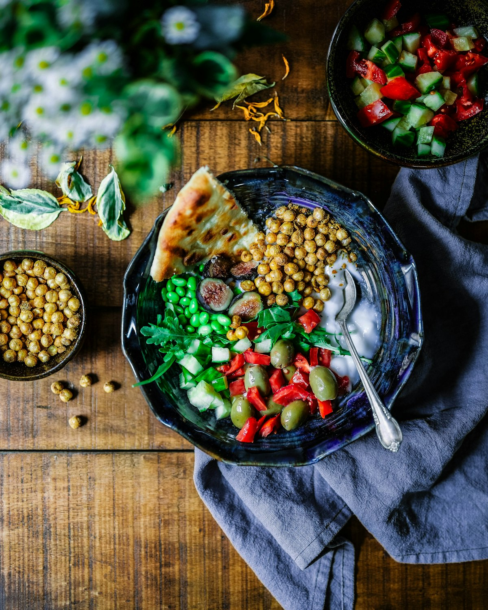

Exhaustive culinary research papers, step-by-step hearth recipes, and molecular braising analyses designed for culinary purists, foragers, and home cooks.

The Science of Slow Stewing: Collagen Hydrolysis & Gelatin Viscosity
A biochemical breakdown of how triple-helix collagen denatures into silken gelatin between 160°F and 195°F, transforming tough cuts into unctuous feasts.

Clove Eugenol Phytochemistry: Aromatic Savory Stew Synergy
Exploring the molecular interaction between whole clove phenylpropanoids, lipid molecules, and savory meat peptides in long Dutch oven reductions.

Foraging Evergreen Pine Needles: Terpenes, Safety & Broth Infusions
Botanical taxonomy of edible Pinus species, essential safety protocols against toxic yew, and precise infusion timings for clean citrusy broths.

Cast Iron Dutch Oven Metallurgy: Thermal Mass & Lid Condensation Physics
How thick-walled iron cocottes regulate radiant thermal convection, prevent hotspot scorching, and redistribute aromatic steam condensation.

Wild Forest Fungi: Morels, Chanterelles & Glutamate Umami Synergy
Maximizing savory depth in woodland stews through natural mushroom dehydration, rehydration broth extraction, and ribonucleotide pairing.

Artisan Sourdough Dumplings: Viscous Stew Broth Adsorption Mechanics
The physics of crumb porosity, gelatinized starches, and herb fat emulsification when steaming sourdough dumplings directly atop simmering ragouts.